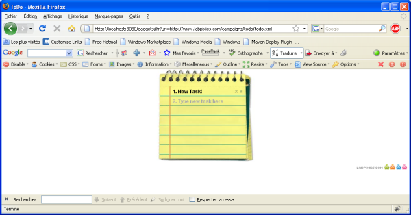

Building and running Apache Shindig for Java
This is the Java steps on how to build and run Apache Shindig.
Prequisites before building Apache Shindig
In order to build Apache Shindig, you must have the following:
- Java (JDK/JRE) 1.5 or later installed on your system and the JAVA_HOME
environment variable set.
- A Subversion client installed in order to checkout the code.
- Apache Maven installed to perform the build.
Getting the code
Create a subdirectory and checkout the Apache Shindig code from its Subversion
repository
- mkdir ~/src/shindig (or wherever you'd like to put it)
-
cd ~/src/shindig
-
svn co http://svn.apache.org/repos/asf/shindig/trunk/
.
Building and running the code with Maven
To build a Web Archive (WAR) file for the Gadget server and run tests, perform
the following:
- Make sure you have the prerequisites installed first.
-
cd ~/src/shindig/
-
mvn
- Once the build successfully completes, you can install the built WAR files
located in the /target subdirectory onto your JEE server.
To run the code and start a Jetty server that will run on at localhost:8080:
To run the Jetty server on a different port, use:
-
cd java/server
-
mvn clean install jetty:run
-DrunType=<full|gadgets|social>
-Djetty.port=<port>
Once you've either installed the WAR file on your JEE server, or are running
locally using the Jetty server, you can test the Gadget server using:
- http://localhost:<port>/gadgets/ifr?url=http://www.labpixies.com/campaigns/todo/todo.xml

Setting up an Eclipse project to build Apache Shindig
These steps, after completing the previous section, will allow you to build from
within Eclipse using the Maven2 plugin. You should first install the Maven
plugin, then create the new Java project.
- Create ~/.m2/settings.xml consisting solely of
- Install the Maven2 plugin
- Help -> Software Updates -> Find and Install
- Search for new features to install
- Create a new remote update site for the Maven 2 plugin
- Name: Maven2 - Sonatype
- URL: http://m2eclipse.sonatype.org/update/
- Select the site and click "Finish"
- There are optional dependencies on mylyn and subclipse. If you don't
have these plugins, you can get them here.
Otherwise, select only the Maven Integration plug-in.
- Complete the installation
- Setup new workspace and project
Creating a new workspace eliminates the
performance cost from existing projects and makes it easier to manage the
code.
- File -> Switch Workspace -> Other...
- Select directory to store workspace
- Do not select a parent directory of the Apache Shindig source (e.g.
~/src/shindig) as Eclipse won't allow you to create the Java
project.
- Something like ~/eclipse/workspaces/shindig
would work fine
- File -> New -> Java Project
- Name the project. The instructions below will assume
"SHINDIG".
- Select 'Create project from existing source' and navigate to
.../src/shindig/java
- Click Finish
- If you see a dialog for "Open Associated Perspective", click
Ok. Don't worry about the errors after loading as they will
be fixed in the next step.
- Right-click the project, select Maven : Enable Dependency
Management
- Right-click the project, select Maven : Update Source
Folders
- Optionally, if you would like to be able to browse or step into the
code of your dependent jars when debugging, you need the source
jars. Right-click the project, select Maven : Download
Sources and Eclipse will automatically know about these
sources when debugging. You can browse them under Maven
Dependencies in your project.
- If you'll be using AllTests to run tests or generate code coverage
stats, adjust the project's output folders.
- Project -> Properties -> Java Build Path
-> Source
- Locate and open SHINDIG/gadgets/src/test/java
- Select Output Folder: (Default Output Folder)
and click Edit...
- Select Specific Output Folder
- Enter target/test-classes and click OK.
- Repeat for
SHINDIG/social-api/src/test/java
Generating Code Coverage in Eclipse
To generate code coverage statistics inside of Eclipse, install the EclEmma plugin. Then
- Open org.apache.shindig.gadgets.AllTests
- Right-click in the class, and select Coverage as -> JUnit
Test
Running inside Eclipse
To debug the server in Eclipse, follow the last two steps here (takes a few minutes to set up):
- "Using eclipse external tools"
- "Attaching to the server running in debug mode, using eclipse"
Note: You must have set up Eclipse to build the code or do mvn
package yourself after making changes, but you won't need to restart
Jetty to see your changes.
Additional reading
Read java/README for original instructions on how to start up any of the
java shindig servers.
Read javascript/README for instructions for using the Apache Shindig Gadget
Container JavaScript to enable your page to render Gadgets using gmodules.com or
a server started up as described above.